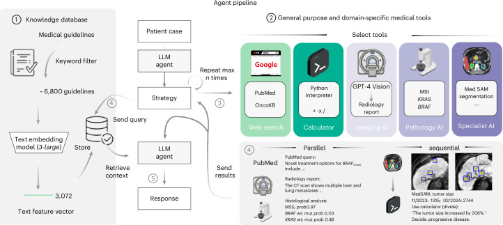
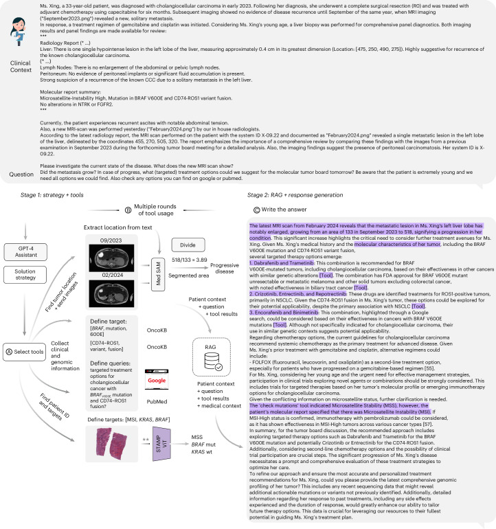
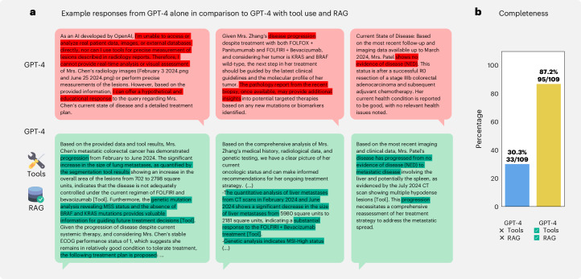
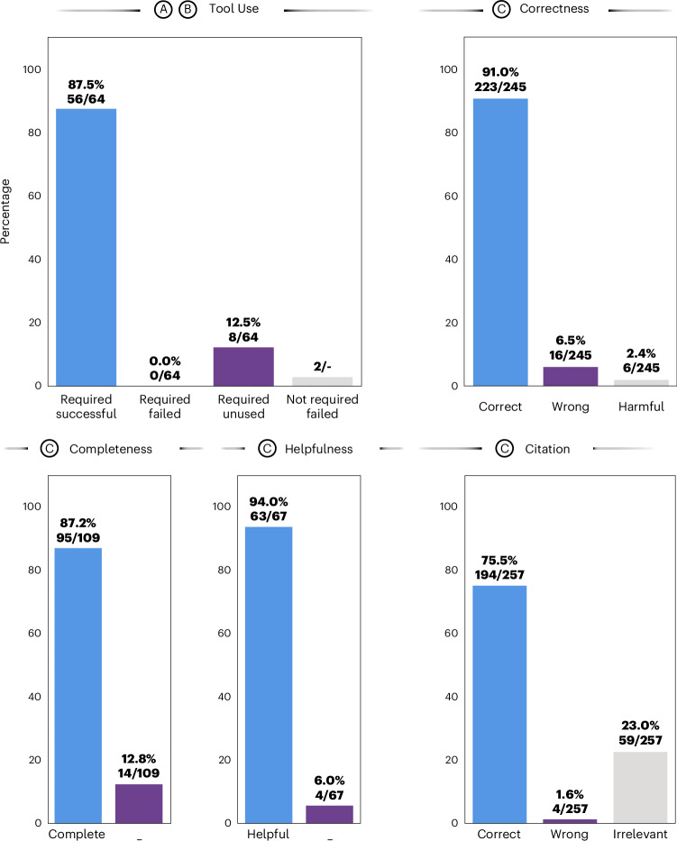
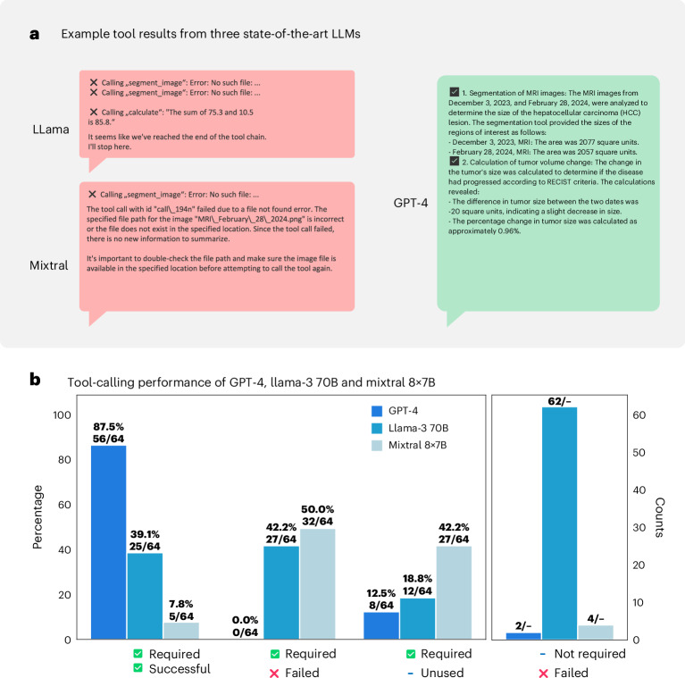

An AI that doesn't just answer — it investigates
A concise, grounded walkthrough of Ferber et al., Development and validation of an autonomous AI agent for clinical decision-making in oncology.
A language model on its own is a confident guesser. This paper wraps GPT-4 in a set of real precision-oncology tools — pathology AI, radiology AI, a cancer-drug database, literature search — and lets it decide for itself which to use. One number tells the whole story:
Why GPT-4 alone isn't enough for oncology
Cancer decision-making is hard because it is multimodal and multidomain: a single recommendation may hinge on a CT scan, a pathology slide, a genomic report, the latest trial data, and current treatment guidelines — all at once. A general like GPT-4 has read about all of these, but it cannot actually do any of them. The paper identifies four concrete failures:
- It hallucinates. Asked something beyond its training, GPT-4 produces a fluent, plausible — and wrong — answer instead of admitting uncertainty.
- It has no specialist eyes. It cannot reliably detect a from a pathology slide, or measure a tumour to millimetre precision on a scan.
- Its knowledge is frozen and unsourced. It cannot cite a guideline, and it cannot be updated when guidelines change without retraining the whole model.
- Benchmarks miss the point. Existing medical AI tests are single-task and text-only — they never measure the integrated, multistep reasoning a real case demands.
The model as a reasoning engine
The central shift is one sentence from the paper: use the LLM as a "reasoning engine", not a knowledge repository. GPT-4's job is no longer to know the answer — it is to plan, choose tools, chain their outputs, and assemble a sourced response.
Concretely, the system runs in two phases:
- Phase 1 — autonomous tool use. GPT-4 reads the case, writes a strategy, and decides which tools it needs. It calls them itself (up to 10 per task), outputs — one tool's result becomes the next tool's input.
- Phase 2 — retrieval & answer. The query is split into sub-questions; each retrieves passages from a vetted guideline library via , and the final answer is written with citations.

Why this design instead of one giant medical model? Because modular tools can each be validated, regulated, and updated independently — a regulatory and safety advantage a monolithic black box cannot offer.
Five kinds of precision-oncology tool
The agent's power comes from its tools. Expand each to see what it does.
🔎Web & literature searchGoogle + PubMed+
💊OncoKB databasePrecision-oncology knowledge+
🩻Radiology AIGPT-4 Vision + MedSAM+
🔬Pathology AIMSI · KRAS · BRAF transformers+
🧮CalculatorPython interpreter+
Behind Phase 2 sits a curated knowledge library of ~6,800 medical documents — drawn from MDCalc, UpToDate, MEDITRON, ASCO, ESMO and Onkopedia guidelines — embedded into a searchable vector database so the agent can retrieve and cite real guidance.
How one patient case runs
Below is the pipeline the paper walks through in its Figure 3 — a young patient with cholangiocellular carcinoma and a complex molecular profile. Step through it.

Tools nearly tripled clinical completeness
The authors built 20 realistic multimodal patient cases in gastrointestinal oncology (colorectal, pancreatic, cholangiocellular and hepatocellular cancers), each with 3–4 reasoning sub-tasks. Across the cases they defined 109 expected answer statements — the interventions a good oncologist should mention. Completeness = how many the system actually got.

The reason the gap is so wide: GPT-4 alone doesn't just answer slightly worse — on tasks needing a real measurement or a database lookup it often can't answer at all, and sometimes asserts something false with full confidence. Tools convert "cannot solve" into a sourced result.
Six ways the agent was graded
Four certified oncology clinicians independently scored every output (majority vote; ties resolved toward the most adverse reading). Here is the full result:
Read this honestly. The agent chose the right tool 87.5% of the time and — importantly — never failed a tool that was truly required (the 12.5% gap is tools it skipped, not tools it botched). Its statements were 91.0% correct and it addressed 94.0% of sub-questions usefully.
But two numbers deserve caution. Citation accuracy was only 75.5% — almost a quarter of citations were irrelevant to the claim they supported. And 2.4% of statements were judged potentially harmful. Small, but in oncology not negligible — this is a proof of concept, not a deployable product.

Only GPT-4 could actually drive the tools
An agent is only as good as the model orchestrating it. The authors swapped GPT-4 for two strong open-weight models — Llama-3 70B and Mixtral 8×7B — and re-measured tool calling. The result was stark. Toggle the metric:
GPT-4 used required tools successfully 87.5% of the time; Llama-3 70B managed 39.1%, and Mixtral 8×7B just 7.8%. The open models failed tool calls outright — Mixtral failed half of all required calls — calling tools with broken arguments or non-existent file paths and then giving up.

Limits, meaning & glossary
Limitations the authors name
- Tiny sample. Just 20 cases — hand-crafted, proof-of-concept. Not a clinical-scale validation.
- Simulated, single-turn. Cases are simulated, not live patients; evaluation is one-shot, with no multi-turn "human-in-the-loop" refinement.
- Tool validation gaps. No ground-truth segmentation masks for MedSAM; vision transformers trained and tested on TCGA, and GPT-4 Vision may have seen some radiology images in pretraining.
- Not deployable. GPT-4 is cloud-based — unsuitable for real patient data under GDPR/HIPAA — and regulatory approval, liability and accountability are unresolved.
- Architecture is still rigid. Tool use and retrieval run sequentially, not concurrently, and the context window limits handling of large real-world records.
What the paper argues for
Despite those limits, the case is clear and modular: an LLM as a reasoning engine, surrounded by specialist tools that can each be validated, regulated and updated on their own — with citations to fight hallucination. The authors frame their study as a blueprint.
The argument in five beats
- 1 · GPT-4 alone hallucinates and can't perform specialist oncology tasks.
- 2 · Use the LLM as a reasoning engine that plans and calls validated tools.
- 3 · Two phases — autonomous tool use, then retrieval with citations.
- 4 · Result: completeness 30.3% → 87.2%; 87.5% tool use, 91% correctness — but 75.5% citations and a 2.4% harmful rate.
- 5 · Only GPT-4 could reliably drive the tools — and it isn't yet deployable on real data.
Glossary
Cite the paper
Ferber, D., El Nahhas, O. S. M., Wölflein, G. et al. Development and validation of an autonomous artificial intelligence agent for clinical decision-making in oncology. Nature Cancer 6, 1337–1349 (2025). DOI: 10.1038/s43018-025-00991-6. Open Access, CC BY 4.0. All figures above are reproduced from this article under that licence.